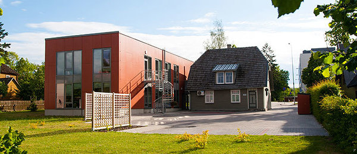

Puusepa Tervisekeskus
Ludvig Puusepa 3
50406 Tartu
Praksis avatud:
| Päev | Dr. Tarvo Kiudma | Dr. Aet Valgepea | Dr. Anu Vasar |
|---|---|---|---|
| Esmaspäev | 08.00 - 16.00 | 08.00 - 16.00 | 08.00 - 16.00 |
| Teisipäev | 10.00 - 18.00 | 10.00 - 18.00 | 10.00 - 18.00 |
| Kolmapäev | 08.00 - 16.00 | 08.00 - 16.00 | 08.00 - 16.00 |
| Neljapäev | 08.00 - 16.00 | 09.00 - 17.00 | 08.00 - 16.00 |
| Reede | 08.00 - 16.00 | 08.00 - 16.00 | 08.00 - 16.00 |
Kuidas tulla:
Meile saab tulla bussiga nr 1, 3, 5, 7, 18, 24
Maja hoovis on parkla, kus saab tund aega parkimiskellaga tähistatult parkida
